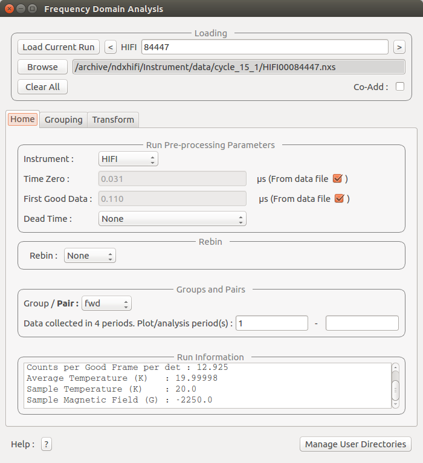
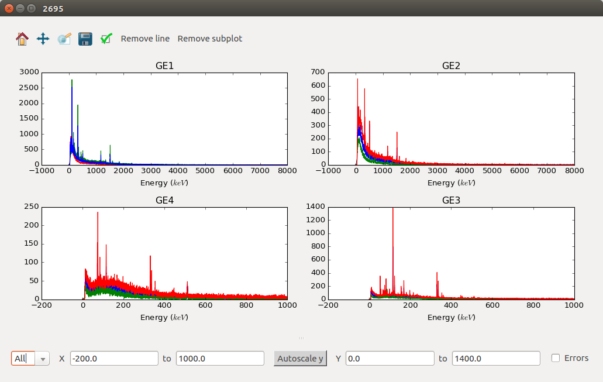
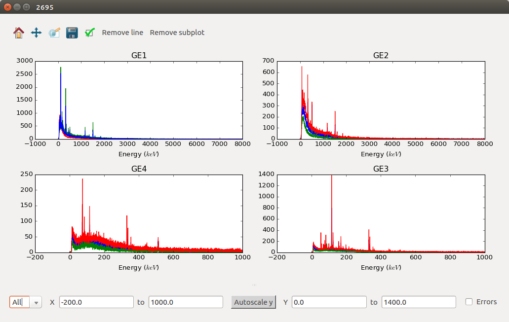

\(\renewcommand\AA{\unicode{x212B}}\)
Muon Changes¶
{kind=link}
 

{kind=link}
Interface¶
New¶
Elemental Analysis has been added to Muon Interfaces: Includes a selectable Periodic Table and can plot elemental lines against the currently loaded data.
New Frequency Domain Analysis GUI added, the original one is now marked as old and is deprecated so may not be included in future releases. See the documentation for more details.
Improvements¶
TF Asymmetry mode now displays the chi squared value at the top of the browser.
ALC interface now sorts the data into ascending order.
Muon Analysis now includes number of event per frame and number of events per frame per detector in the run info box on the home tab.
Frequency Domain Analysis now lets the user select the phase table in MaxEnt mode.
CHRONUS now has a transverse and longitudanal default grouping table, the main field direction is read from the file to determine which to use.
Added x axis labels to Maxent and FFT plots in frequency domain analysis.
For FFT in frequency domain analysis. Set default apodization function to Lorenz and associated default decay constant to 4.4.
MaxEnt now produces better warning messages for invalid properties.
Bugfixes¶
Results table now includes all logs that are common to all of the loaded files.
When turning TF Asymmetry mode off it no longer resets the global options.
Results table will produce correct values for co-added runs.
The x limits on the settings tab will now correct themselves if bad values are entered.
The load current run button now works for CHRONUS in muon analysis.
ALC interface now removes all of the fitting regions for the baseline modelling when the data changes.
ALC interface now produces a warning if the custom grouping is not valid.
The new Frequency Domain Analysis interface now crops the raw data by first and last good times before the calculation of the PhaseQuad workspace. This does not affect the raw data in the ADS.
The new Frequency Domain Analysis now masks out any detectors not in any of the default grouping tables before calculating the phase table and PhaseQuad workspace.
Frequency Domain Analysis will ignore the fix phases option if phase table is not used.
Algorithms¶
New¶
ApplyMuonDetectorGrouping added to allow scripting of the Muon Analysis GUI workflow. Applies grouping counts/asymmetry to muon data and stores the result in the ADS.
ApplyMuonDetectorGroupPairing added to allow scripting of the Muon Analysis GUI workflow. Applies a group pairing asymmetry calculation to muon data and stores the result in the ADS.
LoadAndApplyMuonDetectorGrouping added to allow scripting of the Muon Analysis GUI workflow. The grouping/pairing information is loaded from an XML format file, which can be produced through the muon analysis GUI via the ‘Save Grouping’ button. Replicates the Load Grouping button of the grouping tab, adds workspaces to the ADS.
LoadPSIMuonBin added the ability to load a .bin file from the PSI facility in switzerland, as a workspace.
MuonPreProcess added to simplify new GUI backend. Performs a series of common analysis pre-processing steps on Muon data. Sample logs are modified to record the input parameters.
MuonGroupingCounts added to simplify new GUI backend. Applies a grouping (summation of counts) across a set of detectors in Muon data.
MuonPairingAsymmetry added to simplify new GUI backend. Applies a pairing asymmetry calculation between two detector groups from Muon data.
MuonGroupingAsymmetry added to simplify new GUI backend. Applies an estimate of the group asymmetry to a particular detector grouping in Muon data.
Improvements¶
MuonMaxent has validation checks on its input.
CalMuonDetectorPhases now sends a warning to the log window if it fails to fit a spectrum instead of exiting the process of creating a phase table.
PhaseQuad now ignores spectra which do not have a valid phase table entry.
Bugfixes¶
EstimateMuonAsymmetryFromCounts had a bug that meant the first good bin was excluded from calculating the normalization.